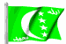

The Country & People of Comoros
This page contains links to sites in Comoros and Comoros related sites.
For Middle East, North Africa, Arab and regional information visit Arab Countries
Hints:
- Use the "FIND" function in the Edit menu of your browser to search the page
- Use translating services in Chrome or Bing Bar in Internet Explorer to view page and/or linked websites in your language
General Info
* Business
* Culture
* Education
* History
* Media
* Organizations
* Travel
* Gateways
* Arab Countries
Comoros, the, officially Union of the Comoros (2005 est. pop. 671,000), 838 sq mi (2,170 sq km), occupying most of the Comoro Islands, an archipelago in the Indian Ocean, between the African coast and Madagascar. The capital is Moroni. It consists of three volcanic main islands—Njazidja, Nzwani, and Mwali (formerly Grande-Comore, Anjouan, and Moheli, respectively)—as well as numerous coral reefs and islets. A fourth island, Mayotte, is administered by France but claimed by the Comoros. Because of poor soil, lack of natural resources, and overpopulation, the islands have severe economic problems. Most of the population is engaged in agriculture, involving subsistence crops and the production of vanilla, copra, and essential oils for export. The people are of mixed African, Arab, Malay, and Indian descent. French and Arabic are the official languages, but most people speak a local blend of Swahili and Arabic. The state religion is Islam.
History
Originally populated by immigrants from Africa, Indonesia, and Arabia, the islands were ceded to the French between 1841 and 1909. After occupation by the British in World War II, they were granted administrative autonomy within the French Union (1946) and internal self-government (1968).
In 1974 the islands voted to become independent, except for Mayotte, which chose to remain under French control.
In 1978 the Comoros was proclaimed a federal Islamic republic; shortly thereafter, a one-party state was formed under Pres. Ahmed Abdallah Abderrahman.
After his assassination in 1989, Saïd Mohamed Djohar became interim president and subsequently won election in a multiparty contest. He survived an impeachment attempt in 1991 and several coup attempts.
In 1996 Mohamed Taki Abdulkarim was elected president.
In 1997 rebels took control of the islands of Nzwani and Mwali, declaring their secession and desire to return to French rule.
In 1999 the islands were granted greater autonomy. Following a coup in Apr. 1999, Col. Azali Assoumani assumed the Comoran presidency.
Nzwani voted (2000) for indepedence, but in 2001 forces favoring reuniting with the Comoros seized power there, and a Comoran referendum approved additional autonomy for the three islands. Azali resigned (2002) prior to new elections, and Prime Min. Hamada Madi became interim president. After two disputed elections, Azali was declared president in May 2002.
An accord in Dec., 2003, concerning the division of powers between the federal and island governments paved the way for legislative elections in 2004, in which parties favoring autonomy for the individual islands won a majority of the seats.
The 2006 presidential election was won by Ahmed Abdallah Mohamed Sambi, a Sunni cleric regarded as a moderate Islamist.
In Apr., 2007, the president of Nzwani, Mohamed Bacar, refused to resign as required by the constitutional courts and used his police forces to retain power, holding an illegal election in June, after which he was declared the winner. The moves were denounced by the central government and the African Union, but the central government lacked the forces to dislodge Bacar.
In Nov., 2007, the African Union began a naval blockade of Nzwani and imposed a travel ban on its government's officials. With support from African Union forces, Comoran troops landed on Mzwani in Mar., 2008, and reestablished federal control over the island. Bacar fled to neighboring Mayotte, then was taken to Réunion; in July he was flown to Benin.
A referendum in May, 2009, approved of a constitutional amendment to extend the president's term to five years and replace the islands' presidents with governors, but it was denounced by opposition groups and voter turnout was light.
In May, 2010, however, the constitutional court overturned the term extension, but the president's term expired without new elections. In June, President Sambi formed an interim government, and elections were announced for November. Elections were finally held in November and December; Vice President Ikililou Dhoinine, the ruling party candidate, was elected to succeed Sambi, but the opposition accused the government of massive vote rigging.
********
Copyright (c) 2012 Columbia University Press.
Used by permission of Columbia University Press.
General Info
Cities, towns, municipalities, places, flag, maps, useful Information....
Business
economy, reports, statistics, banks, directories, jobs, investment, promotion....
Culture
General resources, heritage, art, literature, photography, cinema, music, song, dance, cultural, scientific,
environmental, sporting entities & info....
education
Schools, colleges, academies, universities, polytechnics, institutions, research, resources, projects....
History
Ancient & modern history, human rights, politics & political parties, related sites, articles....
Media
Newspapers, magazines, news, newsletters, news agencies, radio, TV, internet, articles, reports, cartoons....
Organizations
Government, ministries, overseas missions, embassies, corporations, organizations, industrial entities, centers,
public hospitals, institutions, societies, foreign entities....
Travel
Airlines, air, sea & coach charters services, travel, tours, guides, hotels, resorts, inns, hostels, health,
travel tips, weather....
Gateways
Gateways, search engines and directories to country related sites and information....
Arab Countries
Arab World: Middle East, North Africa, Arab and regional information. Resources to other Arab countries....
About Comoros
General Information Also see Travel
- All Referer Earth & environment, history, literature & arts, people, places, plants & animals, religion, science & technology, sports & everyday life....
- ArabInfo Overview, government, history, links
- ArabNet Overview, history, geography, business, culture, government, transport, tour guide, links
- Atlapedia Geography, climate, people, demography, religion, education, modern history, currency, other information....
- BBC - Country Profile Overview, facts, leaders, media....
- Britannica.Com Country info, land, people, economy, society, government, history, culture, maps, statistics, links....
- CIA World Factbook Map, geography, people, government, economy, communications, transportation, military, issues
- Comoro Islands Geography, climate, population, language, music....
- Comoros Islands Comprehensive information.Country profile, islands & beyond, travel tips, currency, economy, population, climate, music....
- Country Reports Economy, defense, geography, government, people, anthem, map, news, weather, links....
- Encarta OnLine Info, land & resources, population, economy, government, history, other related items, links....
- Expedia Almanac, fast facts, communications, on business, health & safety, transportation, traveler's directory
- Info Please General info, map, geography, government, history, land & people....
- MweziNet
Encyclopedia of Comoros Islands. Web magazine - economy, press, education, history, politics, society and traditions, literature, music....
- Nation By Nation Info, government, human rights, news, geography, history, people, links....
- Travel Notes Isalands info....
- US Library of Congress Everything you ever wanted to know about Comoros....
- Wikipedia History, politics, geography, economics, demographics, culture, other topics....
- World66 General info, cities, history, people, economy, getting around, getting there, links....
Cities, Towns, Municipalities & Places
- Anjouan An autonomous island of the Union of Comoros
Flag, Maps, Emblems and other information....
- Cellular News Cellular coverage map, systems, frequencies....
- Comores-Online The paradise for Comoros and Mayotte collectors - Philately, postcards, phonecards, maps, engravings....
- ethnologue Languages
- Flag Description, meaning, history, interesting facts
- Flag Explanation, historical, military & political flags, subdivisions, national emblem....
- World Atlas A brief description, fast facts, flag, landforms, maps, traveller info, weather
- World Clock Local time, sunrise, sunset, GMT offset, daylight saving....
- World Paper Money Paper currency since 1960
General Info
* Business
* Culture
* education
* History
* Media
* Organizations
* Travel
* Gateways
* Arab Countries
Business and Economy
General, Economy, Reports & Statistics
- Australian Department of Foreign Affairs and Trade Fact sheet (pdf) & travel information....
- Bilateral Relations with Japan Diplomatic, investment, economic cooperation, residents....
- Comoros and the IMF Position in the fund, reports....
- MBendi Business information, news, industries, events
- Muslim Trade Network Trade reference directory and guide....
- US Department of Energy - Comoros Energy-related data, analysis & reports....
- World Bank Overview, news & events, data & statistics, publications & reports, development topics, projects & programs, Public Information Center
Banks
- Banque Centrale de l'Union des Comores Banking and financial activities
Directories, Job Opportunities
Investment & Promotion....
General Info
* Business
* Culture
* education
* History
* Media
* Organizations
* Travel
* Gateways
* Arab Countries
Art, Culture & Sport
General resources, Heritage....
Art, Literature, Photography, Cinema....
- Comores Photos Beautiful photos of the Comoros
- Kalamu des îles
- KomEdit Work for the development of literature written in the Comoros
Music, Song & Dance....
- Bedja Musique, infos, photos, videos
- Comores: Music Artists, bands, Traditional music
- M'toro Chamou Artiste originaire de Mayotte, Comores
- La Musique Mahoraise Le site officiel de la musique mahoraise
- Maalesh Group Traditional Comorian music....
- Mégaline Mayotte Musique culturelle et moderne
- Numbawani Musiques de Mayotte et de l'Océan Indien
Cultural, Scientific, Environmental, Sporting Entities & Info
- Action Comores To help alleviate the environmental problems of the Comores (our project is Livingstone's flying fox)
- Animal Info Threatened species, environmental and social data
- AquaStat Information on quantity and quality of freshwater and its availability
- Dinofish Coelacanth: The fish out of time.
- Lemuridae Lemurs are found only in Madagascar and the Comoro Islands....
- Mother Jones Dynamite fishing, coral mining, and farm runoff take a toll
General Info
* Business
* Culture
* education
* History
* Media
* Organizations
* Travel
* Gateways
* Arab Countries
Education
Schools, Colleges, Academies, Universities & Polytechnics
Institutions & Organizations
Research, Resources & Projects
General Info
* Business
* Culture
* education
* History
* Media
* Organizations
* Travel
* Gateways
* Arab Countries
History, Human Right & Politics
Ancient & Modern....
- BBC Timeline A chronology of key events
- Political Geography History
- World History Archives The history of the Union of Comoros Islands
- World Statesmen Flags, chronology, rulers, governors, ministers, commissioners....
Human Rights, Politics & Political Parties....
- US Department of State Country reports on human rights practices
- Parti Republicain des Comores The struggle for democracy and development
Related Sites, Articles....
General Info
* Business
* Culture
* education
* History
* Media
* Organizations
* Travel
* Gateways
* Arab Countries
Visit Arab Media for satellite stations & Arab newspapers
Media
Newspapers, Magazines....
- Al-Watan The national newspaper
- Kashkazi Magazine
- Kweli Magazine
- La Gazette Weekly
- Le Matin Daily newspaper
OnLine News, Newsletters, News agencies....
- AlKomor.Com Venturing a fresh perspective on the Comoros
- AllAfrica.Com News plus, news wire....
- Comoros News New from World News Network....
- Comores Presse Comores Infos (archives)
- Rahachiri L'Information en ligne sur Mayotte
- Washington Post News & references
Radio, TV, Internet....
- Kweli TV
- Radio Ocean Indien 100.5 MHZ FM STEREO
- ORTC Office Radio et Television des Comores
- Radio Dziyalandze La première radio d Anjouan
- Radio / Tele Mayotte L'actualité quotidienne de Mayotte
Articles, Reports, Cartoons....
- ORTC Office Radio et Television des Comores
- KomorNet A new sight on Comoros, archived articles
General Info
* Business
* Culture
* Education
* History
* Media
* Organizations
* Travel
* Gateways
* Arab Countries
Visit Arab Organizations for Pan-Arab, Middle East, North Africa and regional organizations
Government & Organizations, Corporations, Societies....
Government, Ministries, Councils....
- Chiefs of State and Cabinet Members
- Political Leaders Dates and figures of the leadership since 1975 (with pictures)
- l'Assemblee de l'Union des Comores
- Conference of the Partners of the Union of the Comoros A fundamental law in which each island enjoys a broad autonomy
- President of the Comoros Union Official website - Government documents, information, directories....
- Comores Telecom Societe Nationale des Telecommunication
- Domain.KM Supplier of the domain names .km
- Permanent Mission to UN Les Comores, economie, tourisme, administration, chancelleries, presidence de la republique....
Corporations, Organizations, Public Hospitals and Industrial Entities
- Comores Telecom Societe Nationale des Telecommunications
Centers, Institutions, Societies....
- La Fédération des Associations Mahoraises de Métropole
- Societe Immobilière de Mayotte
Foreign Entities
- PCUC Programme de Codeveloppement Avec L'Uniom des Comores
- United Nations Le Programme des Nations Unies pour le developpement
- Vice-Rectorat de Mayotte Site officiel. Activites de cette institution et presentation des projets les projets de développement...
- World Health Organization Tobacco & health, socio-economic situation
General Info
* Business
* Culture
* education
* History
* Media
* Organizations
* Travel
* Gateways
* Arab Countries
Travel & Tourism
Airlines, Air, Sea & Coach Charters services
- Air Austral Flying the skies of Indian Ocean
- Comores Aviation International
Travel, Tours, Guides.... More country info
- Anjouan Online La perle des Comores
- Itsandra Plongée Tourism & diving in Comoros
- Mayotte Online Le Portail de l'île au Lagon
- Mayotte Tourisme Site du comite du tourisme
- Moheli Tourisme Une nature preservee
- Reve Bleu Centre de plongee (Diving)
- Lonely Planet Travel information, maps, photos, background historical and cultural information....
- Travel Guide General & trave info, money, duty free, health, accommodation, visas....
- World Travel Guide Travel information, regions & places....
Hotels, Resorts, Inns, Hostels....
- Les Baobabs Chambres et table d'hôte à Mayotte
- Isijiva Hotel, bar, restaurant - Mayotte
- Moheli Laka Lodge A beach resort in the middle of the magnificent National Marine Park of Moheli in Nioumachoua
- Relais des Indes Lodge and B&B - Mayotte
- Villa Jessica Cosy little guesthouse - Grande Comore Island
Health & Travel Tips
- Foreign & Commonwealth Office Travel information, country advise, latest travel updates....
- Travel Document Systems Passports, visas, travel documents
- US Consular Information Warning, visa, security, health, crime/drug penalties....
Weather....
- Weather Underground Temperature, humidity, pressure and conditions by city
- Yahoo Weather By city. Forcast, sunrise, sunset, humidity, wind, dewpoint....
General Info
* Business
* Culture
* education
* History
* Media
* Organizations
* Travel
* Gateways
* Arab Countries
Visit Arab Gateways for Arab and other country links
Gateways to Comoros, Classifieds
- Agenda des Comores Le premier portail de l'Union des Comores
- Comores-Online
- Malango Mayotte Directories, information, services, classified ads, weather, news
- Mayannonce Premier site mahorais exclusivement consacré aux petites annonces locales
General Info
* Business
* Culture
* education
* History
* Media
* Organizations
* Travel
* Gateways
* Arab Countries
Please link to this page.
https://www.hejleh.com/countries/comoros.html
For comments, reports of deadlinks and adding your URL
Names, pictures and logos are the copyright of their respective owners.
(C)Copyright 1998-2017 Mazen Hejleh. All rights reserved.